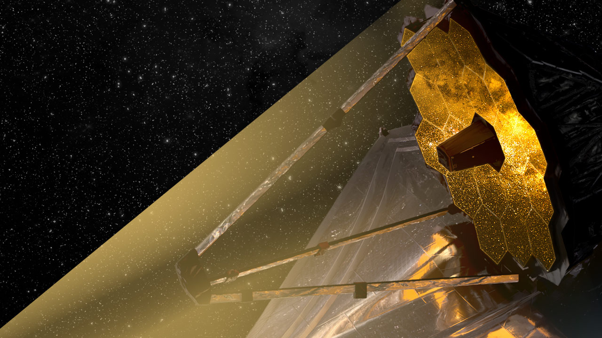

James Webb Space Telescope
The James Webb Space Telescope (JWST) is a monumental leap in space exploration, designed to be the premier observatory of the next decade. Launched in December 2021, JWST is a collaborative effort between NASA, ESA, and CSA, and it aims to solve mysteries of our solar system, look beyond to distant worlds around other stars, and probe the mysterious structures and origins of our universe. Its advanced technology includes a large mirror and instruments capable of observing infrared light, allowing scientists to see through cosmic dust and study the formation of stars and galaxies in unprecedented detail. JWST is set to revolutionize our understanding of the cosmos, pushing the boundaries of what we know about the universe.